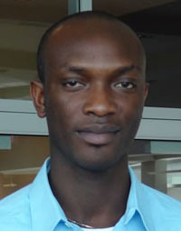

Program
Student Profiles
Olaoluwa Ola Adaramola
A graduate student in management information systems, Olaoluwa Adaramola has already been offered full-time employment despite still having one semester left until graduation. He has accepted a position as a technical support engineer for the Microsoft Corporation in Irving, Texas, and he attributes his success to the opportunities afforded him through the University of South Florida College of Business.
Adaramola, who graduated from the University of Lagos in Lagos, Nigeria with a computer science degree, says USF's challenging and relevant curriculum helped to propel his career. He has had the chance to participate in MIS bootcamps and networking fairs through the MIS Society student organization. He also says the opportunity to take business classes outside of the MIS program has enabled him to become a more well-rounded professional.
Ravi Dhanwani
Ravi Dhanwani believes the MIS program at USF is great for domestic students as well as international scholars. He wanted a graduate program that was flexible and collaborative. He found that at USF. His learning experiences such as case competitions, networking events, and corporate partnerships helped create such an atmosphere. He feels these out-of-the classroom experiences helped prepare him for a consulting career. - Level II Consultant, Booz & Company
Moiz Ghadiyali
Moiz Ghadiyali's motivation to consistently outperform comes from the belief that, through technology, he can create a positive impact on billions of people's lives across the globe. In the summer of 2011, Ghadiyali, an international graduate student in the College of Business’ Information Systems and Decision Sciences Department, interned for Microsoft in Boston, MA. During his internship he was responsible for designing, developing, and testing a feature for Microsoft Sharepoint’s future upgrade release. He says the University of South Florida was pivotal to obtaining an internship with Microsoft, and soon after he graduates, he will begin full-time work as a software development engineer with the company.
Prior to attending USF, Ghadiyali worked as a software developer for Accenture India, a global management consulting, technology services, and outsourcing company.
Ghadiyali, who earned a bachelor’s degree in Computer Technology from Veermata Jijabai Technological Institute in Mumbai, India, chose USF because of the stellar reputation of the ISDS Department’s faculty and highly flexible coursework that enabled him to study the topics of his interest. According to Ghadiyali, the lessons learned in the classroom are easily applied to work in the field, and the skills he acquired here have given him a leg up on the competition.
Janani Jayaraman
A recent graduate of the Master of Science in Management Information Systems program, Janani Jayaraman says she had the opportunity to choose between job offers from prestigious firms such as Goldman Sachs, Citi, Vericle, and Roger West Creative Code, thanks to the connections she made during her time at the University of South Florida College of Business. She accepted a position with Goldman Sachs in Jersey City, N.J. , where she will be working as a programmer analyst beginning in March.
Jayaraman, who earned a bachelors degree in information technology from BSA Crescent Engineering College in Chennai, India, credits USF for providing her with a great environment to network and develop her career. While a student, she served as a systems analyst intern with Verizon Communications, where she created websites and databases. She also participated and won two prestigious competitions with IBM - Exploring Lotus: The XPages Adventure (2011) and IBM Master the Mainframe (2010).
Daniel Pulley
A graduate student in the Information Systems and Decisions Sciences Department in the USF College of Business, Daniel Pulley went from studying people to studying computer systems. Pulley, a graduate of the University of South Florida's Anthropology Department, wanted to continue his education at USF, but decided he wanted to study a more technical subject such as management information systems.
Pulley enjoys the hands-on learning the ISDS Department provides to its students, and while he finds the curriculum quite challenging, it is also rewarding to learn such difficult material. He also appreciates the flexibility of the program, as it provides the opportunity for students to pursue specific interests.
While attending USF as an undergraduate, Pulley worked in the Pharmaceutical Diversion Division of the United States Drug Enforcement Administration, analyzing records and data. Thanks to the contacts and resources available to him through the USF College of Business, he now works as a junior MIS analyst for the e-commerce company Jagged Peak.

Nicole Stamm
Immediately after graduating from USF, Nicole Stamm was offered a job, but that didn't stop her from wanting to pursue her masters at the same time. A recent honors graduate of the College of Business, having majored in Management Information Systems, she recently began working for AT&T as part of their global tier II network support team. She supports all of the business services that AT&T offers to business customers. She has also recently started her masters degree at the business school.
Stamm's interest in computers started at a very young age. Always one to have a computer in her home, she had unlimited access to computer hardware and software. After arriving at USF, she realized she had a passion for helping people solve real world problems by building and using information systems and decided to major in MIS.
She was involved in Kappa Delta Sorority where she was the webmaster as well as the academic excellence chair. As part of the Panhellenic Council, she also acted as the webmaster. Stamm recently worked for the James A. Haley Veterans Hospital designing and developing various SharePoint applications for different departments.